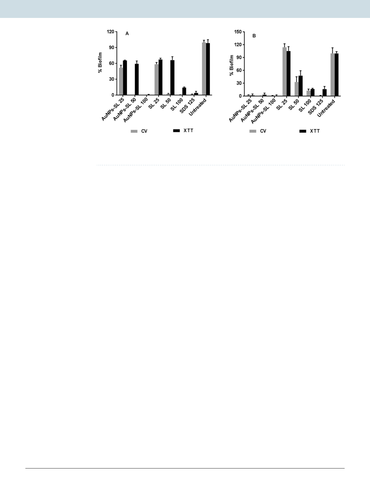

www.nature.com/scientificreports/
www.nature.com/scientificreports
Figure 3. Antibiofilm activity of AuNPs-SL against S. aureus (A) and V. cholerae (B) by CV (grey colour) and
XTT assay (black colour). Experiment was performed in triplicate and graph was plotted using GraphPad Prism
6.0 using average value with SD.
Antibiofilm activity. Effect on biofilm formation. Biofilms have been defined as ‘aggregates of microor-
ganisms in which cells are frequently embedded in a self-produced matrix of extracellular polymeric substances
(EPS) that are adherent to each other and/or to a surface35. Biofilm is one of the survival strategies, in which the
cellular metabolic activity gets reduced thus provides protection from different exogenic compounds etc. In gen-
eral cells in the biofilm are more resistant to drugs36. Extracellular matrix is generally measured by crystal violet
staining protocol; however, the technique has its own limitation as it cannot measure viable cells residing within
the matrix of biofilm. Therefore, XTT was employed to measure the viability of cells residing within the matrix.
The impact of biosynthesized AuNPs-SL was tested for inhibition potential against the mentioned microbes under
given experimental conditions. Different concentration of AuNPs-SL and SL was used to check the antibiofilm
activity against these microbes. SDS was used as positive control. The values were compared to negative control
(without any treatment) and OD590 was plotted in terms of percentage (%). In case of S. aureus, (Fig. 3A) nearly
90% of biofilm formation was reduced at AuNPs-SL-50 and complete inhibition was found at the concentration
AuNPs-SL 100 µg/ml. However upon performing antibiofilm assay through XTT method, complete inhibition of
biofilm formation occurred at 100 µg/ml of AuNPs-SL while at 50 µg/ml AuNPs-SL, 60% remained as compare to
the untreated. For SL also, similar pattern of inhibition was observed (Fig. 3A).
Interestingly, in case of V. cholerae, similar pattern of result was obtained by CV and XTT assay (Fig. 3B). Very
low concentration i.e., 25 µg/ml of AuNPs-SL was enough to inhibit biofilm formation completely whereas SL
inhibits the nearly 80% inhibition of biofilm at 100 µg/ml. This further confirms the effectiveness of AuNPs-SL
against Gram negative bacteria.
Effect on mature biofilm. In the biofilm, cells are almost 1000 times or more than that resistant to planktonic cells
that may differ from organism to organism. Various factors are responsible for this resistance such as growth rate,
temperature, pH, nutritional status, etc. Another mechanism that is considered to be important is the slower dif-
fusion of drugs. Hence, we checked the impact of AuNPs-SL activity on preformed biofilm of indicator microbes.
For preformed biofilm, AuNPs-SL is found to be more effective than SL. The complete eradication of preformed
biofilm of S. aureus (Fig. 4A) and V. cholerae ((Fig. 4B) occurred at the concentration of 100 µg/ml and, 200 µg/ml
respectively. It is highly effective as compared to the positive control as shown in Fig. 4. Biosorption might be one
of the reasons for inactivation of biofilm formation in case of silver nanoparticles mediated biofilm inactivation
in P. aeruginosa as suggested by Park et al.37. The data in the present study validate that AuNPs-SL can effectively
and rapidly detach biofilm, produced by V. cholerae and S. aureus, thus implies the application of the AuNPs-SL
as biofilm-disrupting agents.
Effect on non-dividing cells. Another survival strategy of microbes under adverse condition is dormant
stage or non-multiplying stage. V. cholerae and S. aureus were used as indicator strains to produce long- duration
stationary phase cells of Gram-negative and Gram-positive bacteria respectively. AuNPs-SL was found to kill
non multiplying cells of both of these microbes (Fig. 5). On comparing its antimicrobial activity with SL, it was
observed that AuNPs-SL was effective in killing in non-multiplying cells of S. aureus and V. cholerae (Fig. 5A,B
respectively). In the case of S. aureus, nearly 80% inhibition was obtained at 50 μg/ml of AuNPs-SL respectively
whereas less than 40% of inhibition led by SL at this concentration. Surprisingly, nearly 60% growth is reduced by
AuNPs-SL (25 μg/ml) and completely inhibited at 50 μg/ml in V. cholerae whereas fourfold higher concentration
of SL is needed to inhibit the non-dividing state cells.
Evaluation of mechanism of action. SEM and TEM Imaging. The cellular effect of AuNPs-SL against
these microbes was visualized by SEM (Fig. 6A–D) and TEM (Fig. 6F–H). The untreated bacterial cells retained
their original shape and demonstrated very smooth morphology (Fig. 6A,C). On the other hand, AuNPs-SL
treated cells showed significant changes in morphology and cavities on the cells membranes (Fig. 6B,D). Upon
Scientific Reports | (2020) 10:1463 | https://doi.org/10.1038/s41598-019-57399-3
5